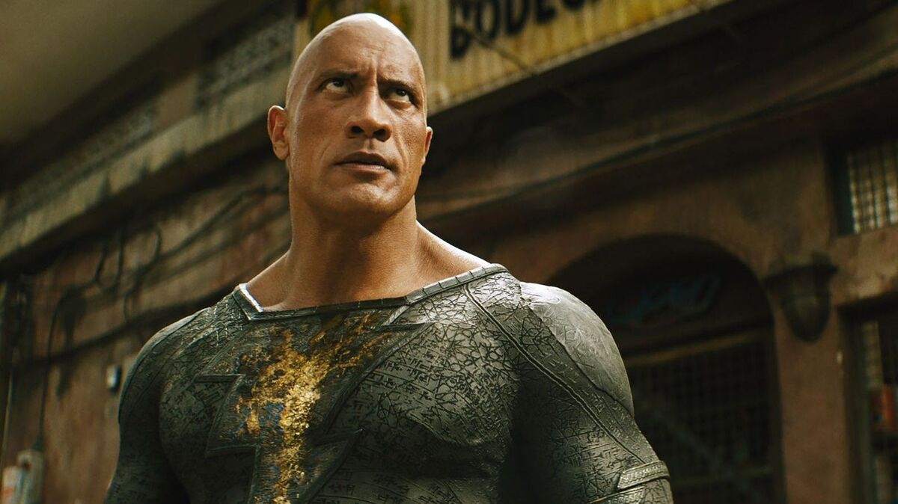
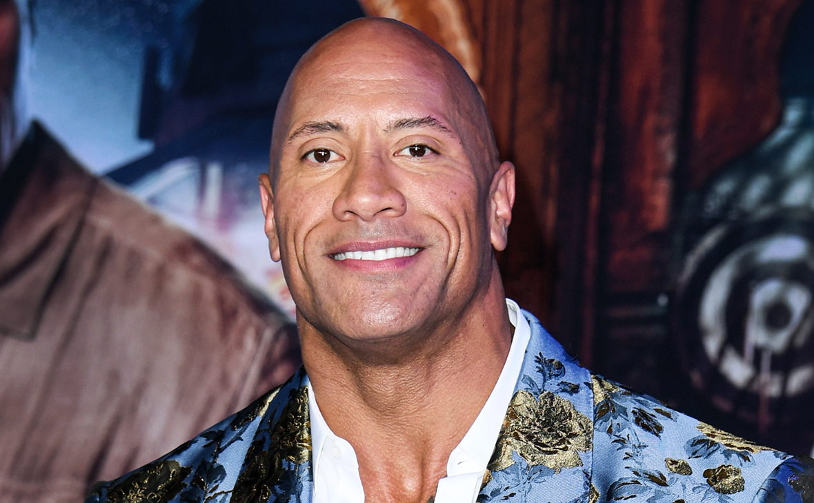
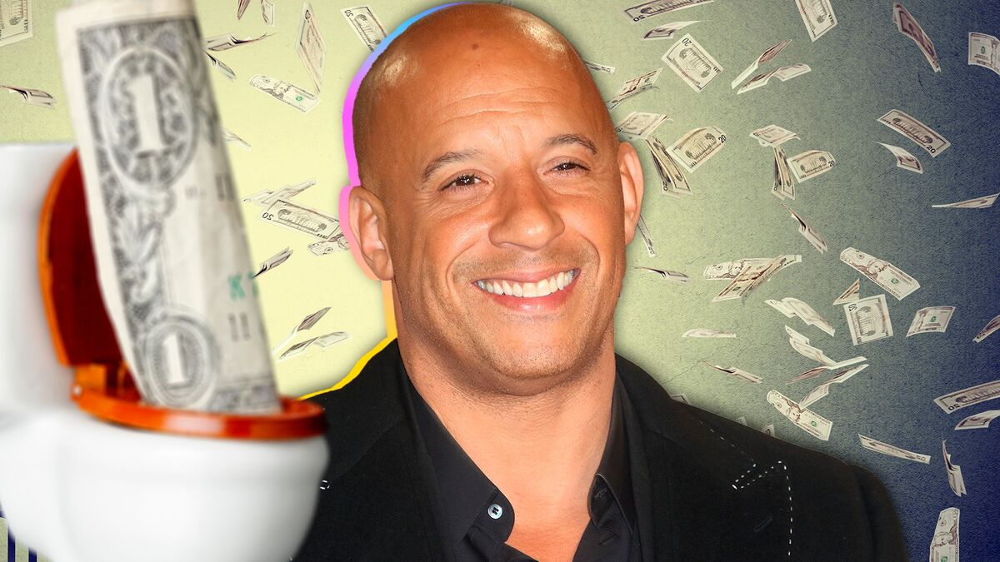
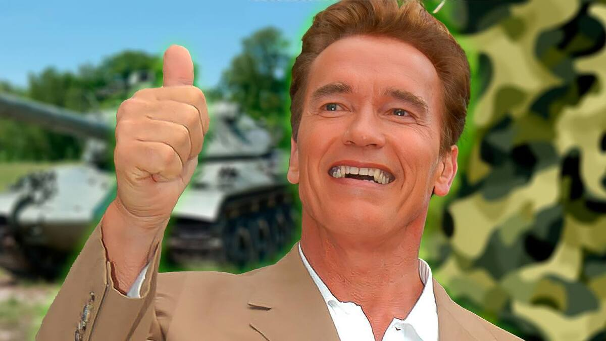
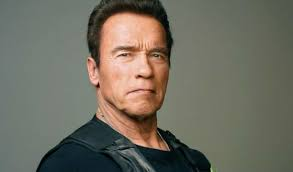
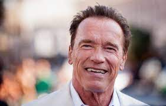

Актёры
Дуэйн Джонсон
Снова на те же грабли: очередной блокбастер
от DC возненавидели за рубежом
Долгожданный фильм вызвал волну негодования.
20 октября 2022 05:30
Голливудская студия DC, которую последние годы преследуют скандалы и многочисленные провалы, не изменяет себе. И вот их очередной масштабно разрекламированный проект, который делали много лет, оказался полной пустышкой.
Кинокомикс «Черный Адам», главную роль в котором исполнил актер Дуэйн Джонсон, получил разгромные оценки от критиков. На рейтинговом сайте Rotten Tomatoes фильму досталось лишь 55 процентов положительных отзывов. В своих статьях эксперты пишут, что картина оказалась совершенно не впечатляющей и очень беспорядочной. Ругают банальный сценарий, который ничем не удивляет, глупые диалоги, клише и плохо сделанные спецэффекты. Об этом отмечают в издании Variety. В прокат в США картина выйдет 21 октября 2022 года.
Вин Дизель
340 млн долларов спустили в унитаз:
Вин Дизель крупно облажался с финалом «Форсажа»
Франшиза рискует провалиться по одной причине.
27 ноября 2022 07:15
Последний фильм из «Форсажа» стал дороже почти на 70%, и его бюджет составил 340 миллионов долларов. Но это вряд ли добавит фрашизе популярности.
С трюками там и так в последнее время перебор. Зрители уже начинали
ворчать, мол, фильм превратился в сомнительную клоунаду. Но проблема даже не в этом. Вин
Дизель допустил непростительную ошибку.
После трагического ухода Пола Уокера фильм утратил духовность, а окончательно добил его
Дуэйн Скала Джонсон, заявил в беседе с порталом PopCornNews Давид Шнейдеров, режиссер и
киножурналист:
«Поскольку американский продюсер умеет считать деньги, вряд ли они увеличили бы
настолько бюджет, предполагая, что фильм в прокате может провалиться. Но все бывает. Это
зависит от мастерства в первую очередь сценариста, во вторую очередь — режиссера, и в
третью — актеров.
Но мне кажется, франшиза "Форсаж" сдала после ухода Пола Уокера. И я не уверен, что
Дуэйн Скала Джонсон стал достойной заменой. С приходом Дуэйна он (фильм. — Прим. авт.)
стал более комедийным, более аттракционным. Пол Уокер вносил туда человеческую струну.
Без него сериал абсолютно не тот».
Арнольд Шварцнеггер
Один сломал, другой потерял:
за что Шварценеггера «выставили» из армии
Будущий актер не отличался смекалкой и дисциплиной.
26 ноября 2022 09:15
В армию молодой Арнольд Шварценеггер попал уже будучи фанатом атлетизма. Его мало интересовала карьера военного,технологии и армейская дисциплина. По воспоминаниям актера, он только и делал, что ждал приказа офицера начать физическую подготовку.
Вместе с приятелем он за час до подъема вставал и тренировался, использовал для занятий любую паузу в военной подготовке. Естественно, это не могло положительно сказаться на службе. Сначала будущей звезде Голливуда пришлось отсидеть две недели на гауптвахте за самовольный побег на конкурс «Мистер Европа», затем последовали более серьезные проступки, пишет «Культурология». Сперва Шварценеггер сломал стену ангара на территории части, перепутав педали на танке, а после уже утопил в реке и сам танк, не поставив его на ручник. Когда солдат досрочно подал рапорт на увольнение, командование ухватилось за эту возможность двумя руками.